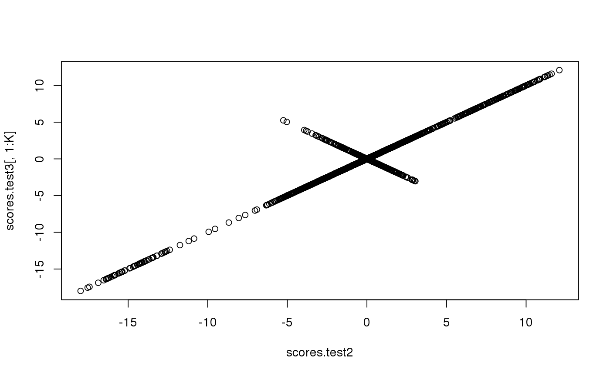

Partial SVD
A randomized algorithm for SVD (or PCA) of a "big.matrix".
big_randomSVD(X, fun.scaling, ind.train = seq(nrow(X)), block.size = 1000, K = 10, I = 20, use.Eigen = TRUE, ncores = 1, backingpath = NULL)
Arguments
- X
- A big.matrix. You shouldn't have missing values in your data.
- fun.scaling
- A function that returns a named list of mean and sd for every column, to scale each of their elements such as followed: $$\frac{X_{i,j} - mean_j}{sd_j}$$.
- ind.train
- An optional vector of the row indices that are used, for the training part. If not specified, all data are used.
- block.size
- Maximum number of columns read at once.
Default is
1000. - K
- Number of PCs to compute. This algorithm shouldn't
be used to compute a lot of PCs. Default is
10. - I
- The number of iterations of the algorithm. Default is
20. - use.Eigen
- Should the
Eigenlibrary be used for matrix computations? Default isTRUE. See details. - ncores
- Number or cores used. Default doesn't use parallelism.
- backingpath
- If
Xis filebacked and parallelism is used, the path where are stored the files that are backingX.
Details
For matrix computations, using Eigen library is faster.
However, if you link R with an optimized math library,
using R's base operations is even much faster.
For example, you can easily link R with the
https://software.intel.com/en-us/intel-mkl (Intel® MKL) through
https://mran.revolutionanalytics.com/open/ (MRO). It really improves performance
of R and RcppArmadillo matrix computations,
yet not the ones of RcppEigen (at least not directly).
So,
-
Eigenshould be prefered if you don't change anything, - base
Rshould be prefered if you use MRO, -
Eigenmay be prefered if you manage to linkRcppEigenwith the MKL (please mailto:florian.prive.21@gmail.com if you do!).
References
Rokhlin, V., Szlam, A., & Tygert, M. (2010). A Randomized Algorithm for Principal Component Analysis. SIAM Journal on Matrix Analysis and Applications, 31(3), 1100–1124. doi:10.1137/080736417
See also
Examples
# Simulating some data X <- big.matrix(1023, 511) X[] <- rnorm(length(X)) # Comparing with prcomp test <- big_randomSVD(X = X, fun.scaling = big_scale(), block.size = 50, ncores = 1)#> (1)str(test)#> List of 5 #> $ d : num [1:10] 54.1 53.8 53.2 53 52.9 ... #> $ u : num [1:1023, 1:10] 0.0615 0.0116 0.0146 0.0224 0.0323 ... #> $ v : num [1:511, 1:10] -0.06563 0.02005 0.00501 0.00483 0.00213 ... #> $ means: num [1:511] -0.00559 0.02691 -0.02009 0.0337 0.02273 ... #> $ sds : num [1:511] 0.962 1.004 0.985 1.003 0.995 ...pca <- prcomp(X[,], center = TRUE, scale. = TRUE) # same scaling print(all.equal(test$means, pca$center))#> [1] TRUEprint(all.equal(test$sds, pca$scale))#> [1] TRUE# scores and loadings are the same or opposite scores <- test$u %*% diag(test$d) plot(as.numeric(scores), as.numeric(pca$x[, 1:10]))plot(as.numeric(test$v), as.numeric(pca$rotation[, 1:10]))# Using only half of the data for "training" ind <- sort(sample(nrow(X), nrow(X)/2)) test2 <- big_randomSVD(X = X, ind.train = ind, fun.scaling = big_scale(), block.size = 10, ncores = 1)#> (2)pca2 <- prcomp(X[ind, ], center = TRUE, scale. = TRUE) # same scaling print(all.equal(test2$means, pca2$center))#> [1] TRUEprint(all.equal(test2$sds, pca2$scale))#> [1] TRUE# scores and loadings are the same or opposite scores2 <- test2$u %*% diag(test2$d) plot(as.numeric(scores2), as.numeric(pca2$x[, 1:10]))plot(as.numeric(test2$v), as.numeric(pca2$rotation[, 1:10]))